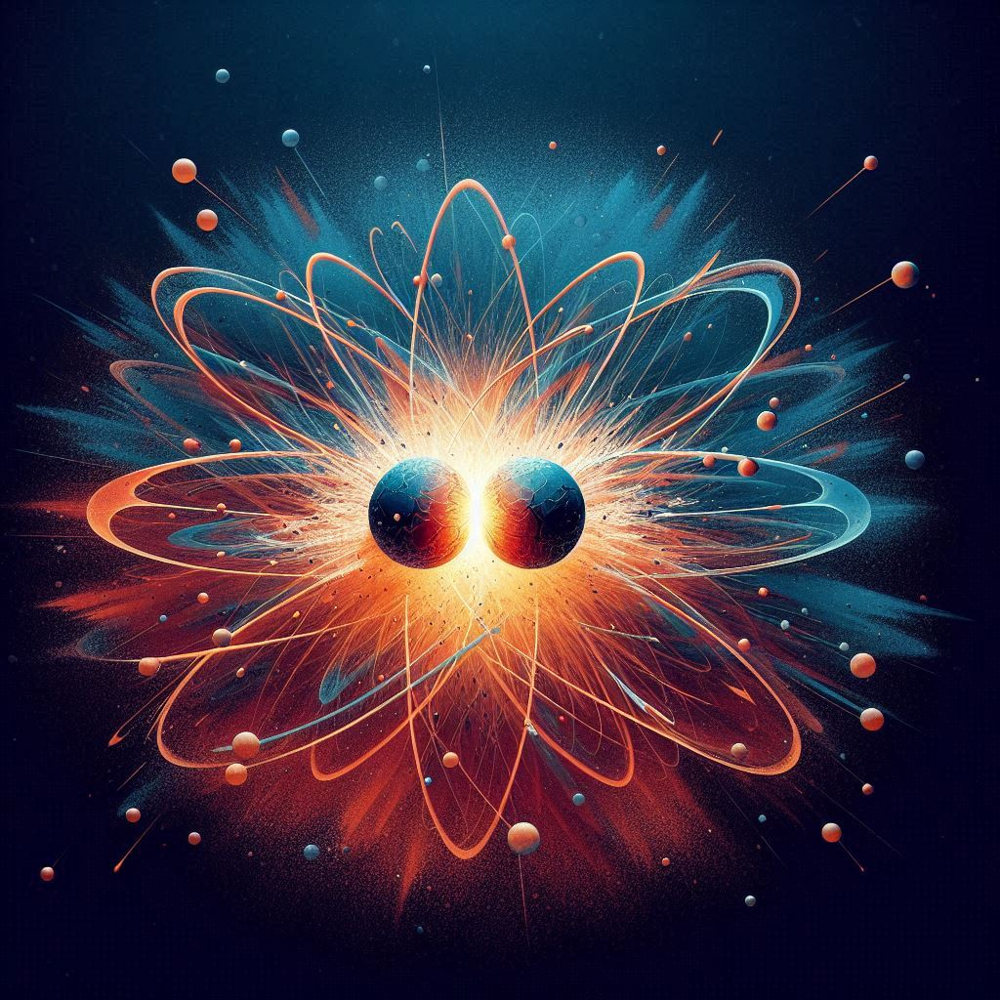

Over the last couple centuries, fossil fuels have been adopted as the primary source of energy, acting as the engine of the industrial revolution and now the modern world. It has been of great service, being fairly cheap and common as well as universally usable in our modern world of machines. Yet scientific research into the environmental impact of fossil fuels has now gained recognition, and we are already witnessing climatic changes. As it emits significant quantities of carbon dioxide into the atmosphere the earth becomes further wrapped in the blanket of greenhouse gases — heating up our planet and preparing to change our ecosystem, soon in a substantial manner. Furthermore, this source of energy is non-renewable, and it will soon no longer be commonplace but will instead become an increasingly rare group of materials. Current estimates say that we have less than two centuries of coal left and that some fossil fuels, such as oil, may only last us until 2060.
So how can this be fixed? There are a wide variety of renewable and sustainable energy sources available, such as solar, wind, hydraulic, geothermal and nuclear. Options such as solar are likely the most useful and efficient given our current technological standing, as well as options such as nuclear power plants if approached in an intelligent manner. However, the most sustainable and powerful of all of these is a somewhat unfamiliar energy source — a lesser known type of nuclear energy known as fusion.
Fusion
Nuclear fusion, like the more familiar nuclear fission, harnesses the power of the atom to generate vast amounts of energy. Unlike fission however, fusion goes about generating this power in a different manner, which is both safer and more powerful. Rather than splitting the nucleus of the atom, of an element like uranium, apart, fusion collides two atoms together — creating a hot and powerful nuclear reaction. Fusion takes two atoms of hydrogen (one of deuterium and one of tritium) and collides them together in a reactor — doing so on a greater scale and subsequently producing vast amounts of energy. Also unlike fission, fusion is far safer and does not emit byproducts of, if uncontained, harmful radiation, but rather of helium (which is the sum of two hydrogen atoms), an inert and non harmful gas. This has something to do with the non-artificial nature of nuclear fusion, as they are a common process occurring within every single star in the universe, which are essentially giant fusion reactors. By thinking about fusion reactors as a recreation of stars, we can gain a deeper and more clear conceptual understanding of nuclear fusion. Stars are extremely hot, as this is the condition required for fusion processes, which occur in a plasma — something which forms after a material is too hot to be a gas, and which all stars consist of. Similarly, nuclear fusion reactors must operate at extremely high temperatures, of roughly 100 million degrees celsius. As well as this, nuclear fusion must also be confined by some force in order to increase collisions and overcome repulsion. In stars, fusion is confined by the gravity of stars, however we, on earth, are not making fusion reactors of this magnitude and must instead take a different approach. The most commonly used approach is to magnetically confine (Magnetic Confinement Fusion) the plasma, keeping it in a loop, these are typically either as tokamaks in a donut shape or as stellarators (Stellarator) which are looped in over themselves. Another more modern approach is something known as inertial confinement (Inertial Confinement Fusion), where the plasma is confined in an extremely small area, pushing them all very close together. In principle, this process of generating energy has extremely powerful results, often being labelled as the ‘perfect’ energy source of the future, however this does not come without its practical challenges.

Challenges
As aforementioned, nuclear fusion has many demanding conditions to work successfully, and even though our modern engineering prowess has managed to produce these conditions, it remains an obvious challenge. Besides the evident difficulty of producing plasma at temperatures around one hundred million degrees Celsius, there is also a requirement of a very high-tech cooling system to keep the surrounding area from melting as well as creating suitable conditions for the superconducting magnets. To contain the heat in these reactors, state-of-the-art cryogenic systems are demanded, which make use of large quantities of supercritical helium liquid pumped throughout the surrounding of the magnets and the outside of the reactors. Furthermore, these cooling systems are not only required to reduce the reactor to room temperature, but must, in the case of magnetically confined reactors, minimise the temperatures from around a hundred million degrees Celsius to around -270 degrees Celsius, or 4 Kelvin. This is because the superconducting magnets used to confine the plasma can only operate at low temperatures approaching absolute zero.In addition to this, there are also technological challenges in the production of energy — these have been the most strenuous challenges, puzzling teams of brilliant scientists for decades and still doing so. Most notably, the task of applying our research into a complete nuclear fusion reactor system has proved very difficult, albeit that we are certainly making strides in the field. In 2022, scientists achieved "ignition" when they produced more energy than what was used to start the reaction. This has been recognised as a major achievement in the development of creating working and feasible fusion reactors, as it means that we have developed a system that utilises fusion to generate energy. Yet, this is but one of several stages in developing the “perfect energy source”, from “ignition” to the commercialisation of fusion upon economical and financial feasibility. The most important stage in this development will be when we have not only produced more energy than is needed to commence the reaction, but have produced more energy than is needed to power the entire reactor. This means that the fusion reactor must power everything, from lasers and heating systems to superconducting magnets and cryogenic systems, which presents an obvious engineering hurdle that demands much more energy output than merely surpassing the kick-start energy. Beyond this, to meet commercial feasibility, the reactor must not only be entirely self-sufficient but must produce enough power to feed the grid and power our world. As a result of these challenges, fusion is still a few decades away from being seen as an option for the grid. But, the toiling of the scientists, engineers, and investors will be worth it once we can bestow the grid with the power of the atom. So what does this future look like and why is it so necessary?
The benefits offered by nuclear fusion are vast, giving us access to clean and unfaltering energy to sustainably power our ever-growing demand of energy — which will only increase as we develop increasingly awesome technologies and venture beyond Earth into the heavens. Fusion, as a limitless and clean source of energy, will act as the perfect means to power our central grids, and as its feasibility continues to increase will be able to be used among technologies like dyson spheres well into the future, collectively powering planets and solar systems as we inhabit the galaxy. As well as having the potential to be the primary centralised energy source to feed the demands of worlds, fusion also has prospects as a power source for spacecraft travelling and transporting both people and cargo from between planets and solar systems. Due to individual fusion operating at such a small scale, it can be collectively scaled to any size, meaning that its reactor size and fuel demands can be moulded to the demands of the spacecraft (such that our technology has met that stage). Overall fusion has incredible potential and to better comprehend this, one can look at it in comparison to solar power. Solar panels convert some quantity (depending on their efficiency) of photons from the sun, a giant fusion reactor, into energy. Fusion reactors, on the other hand, do not merely obtain partial energy produced by fusion, but all of it. Of course, larger expanses of more efficient solar panels can be produced in the future, but fusion has a far superior capability of producing energy as the result of increasing its size and energy efficiency. Nuclear fusion serves as an inspiring means of energy production with magnificent potential in the future, where it may well serve as one of our primary sources of energy in an ever-advancing world of real science fiction.